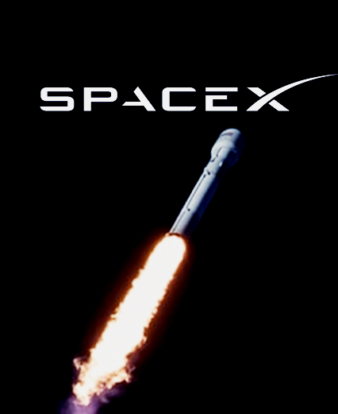
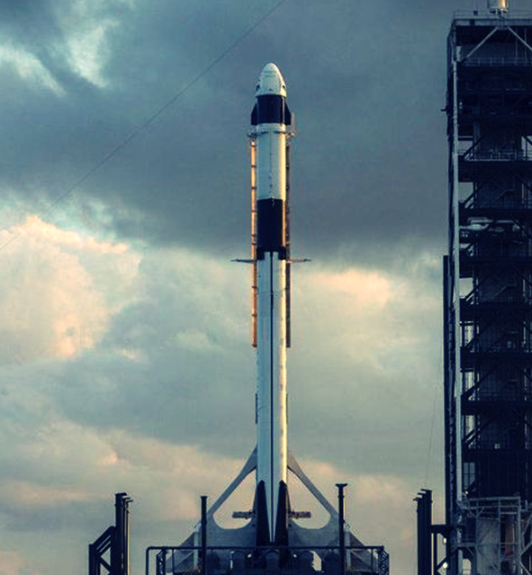
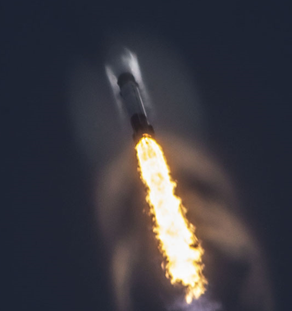
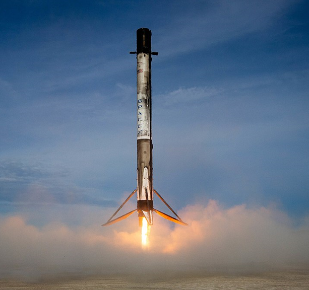
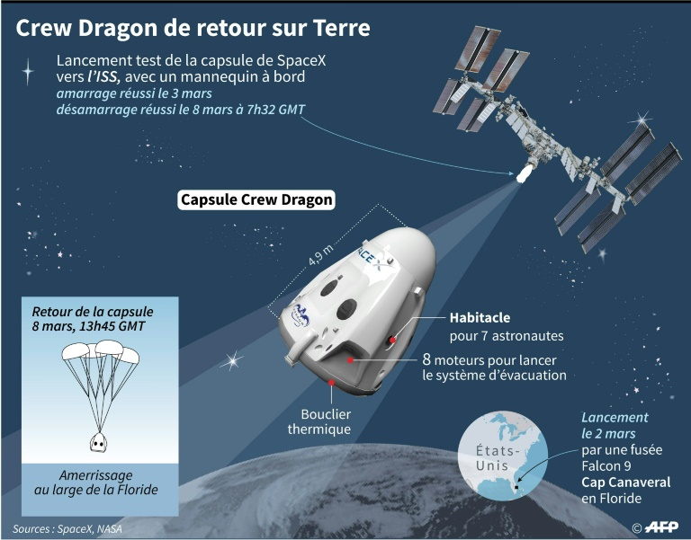

What is SpaceX?
Space Exploration Technologies Corp., trading as SpaceX, is a private American aerospace manufacturer and space transportation services company headquartered in Hawthorne, California. It was founded in 2002 by Elon Musk with the goal of reducing space transportation costs to enable the colonization of Mars. SpaceX has developed several launch vehicles and the Dragon spacecraft. SpaceX's achievements include the first privately funded liquid-propellant rocket to reach orbit (Falcon 1 in 2008),[10] the first private company to successfully launch, orbit, and recover a spacecraft (Dragon in 2010), the first private company to send a spacecraft to the International Space Station (Dragon in 2012),[11] the first propulsive landing for an orbital rocket (Falcon 9 in 2015), the first reuse of an orbital rocket (Falcon 9 in 2017), and the first private company to launch an object into orbit around the sun (Falcon Heavy's payload of a Tesla Roadster in 2018). SpaceX has flown 20 [12]resupply missions to the International Space Station (ISS) under a partnership with NASA.[13] NASA also awarded SpaceX a further development contract in 2011 to develop and demonstrate a human-rated Dragon, which would be used to transport astronauts to the ISS and return them safely to Earth.[14][self-published source?] SpaceX conducted the maiden launch of its Dragon 2 spacecraft on a NASA-required demonstration flight (Crew Dragon Demo-1) on March 2, 2019 and is set to launch its first crewed Dragon 2 on May 16, 2020.[15] In December 2015, a Falcon 9 accomplished a propulsive vertical landing. This was the first such achievement by a rocket for orbital spaceflight.[16] In April 2016, with the launch of CRS-8, SpaceX successfully vertically landed the first stage on an ocean drone ship landing platform.[17] In May 2016, in another first, SpaceX again landed the first stage, but during a significantly more energetic geostationary transfer orbit mission.[18] In March 2017, SpaceX became the first to successfully re-launch and land the first stage of an orbital rocket.[19] In January 2020, with the third launch of the Starlink project, SpaceX became the largest commercial satellite constellation operator in the world.[20][21] In September 2016, CEO Elon Musk unveiled the Interplanetary Transport System, a privately funded launch system to develop spaceflight technology for use in crewed interplanetary spaceflight. In 2018, Musk unveiled an updated configuration of the system, named Starship, which is planned to be fully reusable and will be the largest rocket ever on its debut, scheduled for the early 2020s.[22][23]

History
In 2001, Elon Musk conceptualized Mars Oasis, a project to land a miniature experimental greenhouse and grow plants on Mars. He announced that "This would be the furthest that life's ever traveled"[24] in an attempt to regain public interest in space exploration and increase the budget of NASA.[25][26][27] Musk tried to buy cheap rockets from Russia but returned empty-handed after failing to find rockets for an affordable price.[28][29] On the flight home, Musk realized that he could start a company that could build the affordable rockets he needed.[29] According to early Tesla and SpaceX investor Steve Jurvetson,[30] Musk calculated that the raw materials for building a rocket actually were only three percent of the sales price of a rocket at the time. By applying vertical integration,[28] producing around 85% of launch hardware in-house,[31][32] and the modular approach from software engineering, SpaceX could cut launch price by a factor of ten and still enjoy a 70% gross margin.[33] Launch of Falcon 9 carrying ORBCOMM OG2-M1 In early 2002, Musk was seeking staff for his new space company, soon to be named SpaceX. Musk approached rocket engineer Tom Mueller (later SpaceX's CTO of Propulsion) and Mueller agreed to work for Musk, and thus SpaceX was born.[34] SpaceX was first headquartered in a warehouse in El Segundo, California. The company grew rapidly, from 160 employees in November 2005 to 1,100 in 2010,[35][36] 3,800 employees and contractors by October 2013,[37] nearly 5,000 by late 2015,[38][39] and about 6,000 in April 2017.[40] As of November 2017, the company had grown to nearly 7,000.[41] In 2016, Musk gave a speech at the International Astronautical Congress, where he explained that the US government regulates rocket technology as an "advanced weapon technology", making it difficult to hire non-Americans.[42] Falcon 9 rocket's first stage on the landing pad after the second successful vertical landing of an orbital rocket stage, OG2 Mission. As of March 2018, SpaceX had over 100 launches on its manifest representing about $12 billion in contract revenue.[43] The contracts included both commercial and government (NASA/DOD) customers.[44] In late 2013, space industry media quoted Musk's comments on SpaceX "forcing… increased competitiveness in the launch industry", its major competitors in the commercial comsat launch market being Arianespace, United Launch Alliance, and International Launch Services.[45] At the same time, Musk also said that the increased competition would "be a good thing for the future of space". Currently, SpaceX is the leading global commercial launch provider measured by manifested launches.[46]


Goals
Musk has stated that one of his goals is to decrease the cost and improve the reliability of access to space, ultimately by a factor of ten.[47] CEO Elon Musk said: "I believe $500 per pound ($1100/kg) or less is very achievable".[48] Falcon Heavy Rocket on Launch Pad 39A in Cape Canaveral, Florida. A major goal of SpaceX has been to develop a rapidly reusable launch system. As of March 2013, the publicly announced aspects of this technology development effort include an active test campaign of the low-altitude, low-velocity Grasshopper flight test vehicle,[49][50][51] and a high-altitude, high-speed Falcon 9 post-mission booster return test campaign. In 2015, SpaceX successfully landed the first orbital rocket stage on December 21. In 2017, SpaceX formed a subsidiary, The Boring Company,
[52] and began work to construct a short test tunnel on and adjacent to the SpaceX headquarters and manufacturing facility, utilizing a small number of SpaceX employees,[53] which was completed in May 2018,[54][55] and opened to the public in December 2018.[56] During 2018, The Boring Company was spun out into a separate corporate entity with 6% of the equity going to SpaceX, less than 10% to early employees, and the remainder of the equity to Elon Musk.[56] At the 2016 International Astronautical Congress, Musk announced his plans to build large spaceships to reach Mars.[57] Using the Starship, Musk planned to land at least two unmanned cargo ships to Mars in 2022. The first missions would be used to seek out sources of water and build a propellant plant. Musk also planned to fly four additional ships to Mars in 2024 including the first people. From there, additional missions would work to establish a Mars colony.[8][58] These goals are however facing delays.[59] Musk's advocacy for the long-term settlement of Mars,
goes far beyond what SpaceX projects to build;[60][61][62] a successful colonization would ultimately involve many more economic actors—whether individuals, companies, or governments—to facilitate the growth of the human presence on Mars over many decades.[63][64][65]
Achievements
Major achievements of SpaceX are in the reuse of orbital-class launch vehicles and cost reduction in the space launch industry. Most notable of these being the continued landings and relaunches of the first stage of Falcon 9. As of March 2020, SpaceX has used a single first-stage booster, B1048, at most five times. SpaceX is defined as a private space company and thus its achievements can also be counted as firsts by a private company. Landmark achievements of SpaceX in chronological order include:[66][unreliable source?]- The first privately funded liquid-fueled rocket to reach orbit (Falcon 1 flight 4 on 28 September 2008)
- The first privately developed liquid-fueled rocket to put a commercial satellite in orbit (RazakSAT on Falcon 1 flight 5 on 14 July 2009)
- The first private company to successfully launch, orbit, and recover a spacecraft (SpaceX Dragon on COTS Demo Flight 1 on 9 December 2010)
- The first private company to send a spacecraft to the International Space Station (Dragon C2+ on 25 May 2012)
- The first private company to send a satellite into geosynchronous orbit (SES-8 on Falcon 9 flight 7 on 3 December 2013)
- The first landing of an orbital rocket's first stage on land (Falcon 9 flight 20 on 22 December 2015)
- The first landing of an orbital rocket's first stage on an ocean platform (Falcon 9 flight 23 on 8 April 2016)
- The first relaunch and landing of a used orbital rocket stage (B1021 on Falcon 9 flight 32 on 30 March 2017)[67]
- The first controlled flyback and recovery of a payload fairing (Falcon 9 flight 32 on 30 March 2017)[68]
- The first reflight of a commercial cargo spacecraft. (Dragon C106 on CRS-11 mission on 3 June 2017)[69]
- The first private company to send a human-rated spacecraft to space (Crew Dragon Demo-1, on Falcon 9 flight 69 on 2 March 2019)
- The first private company to autonomously dock a spacecraft to the International Space Station (Crew Dragon Demo-1, on Falcon 9 flight 69 on 2 March 2019)
- The first use of a full flow staged combustion cycle engine (Raptor) in a free flying vehicle (Starhopper, multiple tests in 2019).
- The first reuse of payload fairing. On 11 November 2019 on Starlink 1 Falcon 9 launch. Fairing was from the ArabSat-6A mission in April earlier that year.
Accidents
In March 2013, a Dragon spacecraft in orbit developed issues with its thrusters that limited its control capabilities. SpaceX engineers were able to remotely clear the blockages within a short period, and the spacecraft was able to successfully complete its mission to and from the International Space Station. In late June 2015, CRS-7 launched a Cargo Dragon atop a Falcon 9 to resupply the International Space Station. All telemetry readings were nominal until 2 minutes and 19 seconds into the flight, when a loss of helium pressure was detected and a cloud of vapor appeared outside the second stage. A few seconds after this, the second stage exploded. The first stage continued to fly for a few seconds before disintegrating due to aerodynamic forces. The capsule was thrown off and survived the explosion, transmitting data until it was destroyed on impact.[70] Later it was revealed that the capsule could have landed intact if it had software to deploy its parachutes in case of a launch mishap.[71] The problem was discovered to be a failed 2-foot-long steel strut purchased from a supplier[72] to hold a helium pressure vessel that broke free due to the force of acceleration.[73] This caused a breach and allowed high-pressure helium to escape into the low-pressure propellant tank, causing the failure. The Dragon software issue was also fixed in addition to an analysis of the entire program in order to ensure proper abort mechanisms are in place for future rockets and their payload.[74] In early September 2016, a Falcon 9 exploded during a propellant fill operation for a standard pre-launch static fire test.[75][76] The payload, the Spacecom Amos-6 communications satellite valued at $200 million, was destroyed.[77] Musk described the event as the "most difficult and complex failure" in SpaceX's history; SpaceX reviewed nearly 3,000 channels of telemetry and video data covering a period of 35–55 milliseconds for the postmortem.[78] Musk reported that the explosion was caused by the liquid oxygen that is used as propellant turning so cold that it solidified and ignited with carbon composite helium vessels.[79] Though not considered an unsuccessful flight, the rocket explosion sent the company into a four-month launch hiatus while it worked out what went wrong. SpaceX returned to flight in January 2017.[80] On 28 June 2019, SpaceX announced that it had lost contact with three of the 60 satellites making up the Starlink megaconstellation. The dysfunctional satellites' orbits are expected to slowly decay until they disintegrate in the atmosphere.[81] However, the rate of failure for satellites in megaconstellations consisting of thousands of satellites has raised concerns that these constellations could litter the Earth's lower orbit, with serious detrimental consequences for future space flights.[82]Ownership, funding and valuation
In August 2008, SpaceX accepted a $20 million investment from Founders Fund.[83] In early 2012, approximately two-thirds of the company were owned by its founder[84] and his 70 million shares were then estimated to be worth $875 million on private markets,[85] which roughly valued SpaceX at $1.3 billion as of February 2012.[86] After the COTS 2+ flight in May 2012, the company private equity valuation nearly doubled to $2.4 billion.[87][88] In January 2015, SpaceX raised $1 billion in funding from Google and Fidelity, in exchange for 8.333% of the company, establishing the company valuation at approximately $12 billion. Google and Fidelity joined prior investors Draper Fisher Jurvetson, Founders Fund, Valor Equity Partners and Capricorn.[89][90] In July 2017, the Company raised US$350m at a valuation of US$21 billion.[91] As of May 2012, SpaceX had operated on total funding of approximately $1 billion in its first ten years of operation. Of this, private equity provided about $200M, with Musk investing approximately $100M and other investors having put in about $100M (Founders Fund, Draper Fisher Jurvetson, etc.).[92] The remainder has come from progress payments on long-term launch contracts and development contracts. By March 2018, SpaceX had contracts for 100 launch missions, and each of those contracts provide down payments at contract signing, plus many are paying progress payments as launch vehicle components are built in advance of mission launch, driven in part by US accounting rules for recognizing long-term revenue.[44] Successful SpaceX launches by year[93] Congressional testimony by SpaceX in 2017 suggested that the NASA Space Act Agreement process of "setting only a high-level requirement for cargo transport to the space station [while] leaving the details to industry" had allowed SpaceX to design and develop the Falcon 9 rocket on its own at substantially lower cost. "According to NASA's own independently verified numbers, SpaceX’s development costs of both the Falcon 1 and Falcon 9 rockets were estimated at approximately US$390 million in total. "In 2011, NASA estimated that it would have cost the agency about US$4 billion to develop a rocket like the Falcon 9 booster based upon NASA's traditional contracting processes". The Falcon 9 launch system, with an estimated improvement at least four to ten times over traditional cost-plus contracting estimates, about $400 million vs. $4 billion in savings through the usage of Space Act Agreements.[94] In April 2019, the Wall Street Journal reported that SpaceX was raising another $500 million in funding.[95] In May 2019, Space News reported SpaceX "raised $1.022 billion" the day after SpaceX launched 60 satellites towards their 12,000 satellite plan named Starlink broadband constellation.[96][97] As of May 31, 2019, the value of SpaceX has risen to $33.3 billion.[98] In June 2019, SpaceX started to raise $300 million of investment, mostly from the Ontario Teachers' Pension Plan, which has $191.1 billion in assets under management.[99]
Hardware
Launch vehicles
Falcon 1 was a small rocket capable of placing several hundred kilograms into low Earth orbit.[100] It functioned as an early test-bed for developing concepts and components for the larger Falcon 9.[100] Falcon 1 attempted five flights between 2006 and 2009. With Falcon I, when Musk announced his plans for it before a subcommittee in the Senate in 2004, he discussed that Falcon I would be the 'worlds only semi-reusable orbital rocket' apart from the space shuttle.[101] On September 28, 2008, on its fourth attempt, the Falcon 1 successfully reached orbit, becoming the first privately funded, liquid-fueled rocket to do so.[102] Falcon 9 is an EELV-class medium-lift vehicle capable of delivering up to 22,800 kilograms (50,265 lb) to orbit, and is intended to compete with the Delta IV and the Atlas V rockets, as well as other launch providers around the world. It has nine Merlin engines in its first stage.[103] The Falcon 9 v1.0 rocket successfully reached orbit on its first attempt on June 4, 2010. Its third flight, COTS Demo Flight 2, launched on May 22, 2012, and was the first commercial spacecraft to reach and dock with the International Space Station.[104] The vehicle was upgraded to Falcon 9 v1.1 in 2013, Falcon 9 Full Thrust in 2015, and finally to Falcon 9 Block 5 in 2018. As of 23 March 2020, the Falcon 9 family have flown 84 successful missions with one failure, one partial success, and one vehicle destroyed during a routine test several days prior to a scheduled launch. In 2011, SpaceX began development of the Falcon Heavy, a heavy-lift rocket configured using a cluster of three Falcon 9 first stage cores with a total 27 Merlin 1D engines and propellant crossfeed.[105][106] The Falcon Heavy successfully flew on its inaugural mission on February 6, 2018 with a payload consisting of Musk's personal Tesla Roadster into heliocentric orbit[107] The first stage would be capable of lifting 63,800 kilograms (140,660 lb) to LEO with the 27 Merlin 1D engines producing 22,819 kN of thrust at sea level, and 24,681 kN in space. At the time of its first launch, SpaceX described their Falcon Heavy as "the world's most powerful rocket in operation".[108]

Rocket engines
Since the founding of SpaceX in 2002, the company has developed three families of rocket engines — Merlin and the retired Kestrel for launch vehicle propulsion, and the Draco control thrusters. SpaceX is currently developing two further rocket engines: SuperDraco and Raptor. SpaceX is currently the world's most prolific producer of liquid fuel rocket engines.[109] Merlin is a family of rocket engines developed by SpaceX for use on their launch vehicles. Merlin engines use LOX and RP-1 as propellants in a gas-generator power cycle. The Merlin engine was originally designed for sea recovery and reuse. The injector at the heart of Merlin is of the pintle type that was first used in the Apollo Program for the lunar module landing engine. Propellants are fed via a single shaft, dual impeller turbo-pump. Kestrel is a LOX/RP-1 pressure-fed rocket engine, and was used as the Falcon 1 rocket's second stage main engine. It is built around the same pintle architecture as SpaceX's Merlin engine but does not have a turbo-pump, and is fed only by tank pressure. Its nozzle is ablatively cooled in the chamber and throat, is also radiatively cooled, and is fabricated from a high strength niobium alloy. Both names for the Merlin and Kestrel engines are derived from species of North American falcons: the kestrel and the merlin.[110] Draco are hypergolic liquid-propellant rocket engines that utilize monomethyl hydrazine fuel and nitrogen tetroxide oxidizer. Each Draco thruster generates 400 newtons (90 lbf) of thrust.[111] They are used as reaction control system (RCS) thrusters on the Dragon spacecraft.[112] SuperDraco engines are a much more powerful version of the Draco thrusters, which were initially meant to be used as landing and launch escape system engines on Dragon 2. The concept of using retro-rockets for landing was scrapped in 2017 when it was decided to perform a traditional parachute descent and splashdown at sea.[113] Raptor is a new family of methane-fueled full flow staged combustion cycle engines to be used in its future Starship launch system.[114] Development versions were test fired in late 2016.[115] On April 3, 2019, SpaceX conducted a successful static fire test in Texas on its Starhopper vehicle, which ignited the engine while the vehicle remained tethered to the ground.[116] On July 24, 2019, SpaceX conducted a successful test hop of 20 meters of its Starhopper.[117] On August 28, 2019, Starhopper conducted a successful test hop of 150 meters.
Dragon spacecraft
In 2005, SpaceX announced plans to pursue a human-rated commercial space program through the end of the decade.[119] The Dragon is a conventional blunt-cone ballistic capsule which is capable of carrying cargo or up to seven astronauts into orbit and beyond.[120][120] In 2006, NASA announced that the company was one of two selected to provide crew and cargo resupply demonstration contracts to the ISS under the COTS program.[121] SpaceX demonstrated cargo resupply and eventually crew transportation services using the Dragon.[104] The first flight of a Dragon structural test article took place in June 2010, from Launch Complex 40 at Cape Canaveral Air Force Station during the maiden flight of the Falcon 9 launch vehicle; the mock-up Dragon lacked avionics, heat shield, and other key elements normally required of a fully operational spacecraft but contained all the necessary characteristics to validate the flight performance of the launch vehicle.[122] An operational Dragon spacecraft was launched in December 2010 aboard COTS Demo Flight 1, the Falcon 9's second flight, and safely returned to Earth after two orbits, completing all its mission objectives.[123] In 2012, Dragon became the first commercial spacecraft to deliver cargo to the International Space Station,[104] and has since been conducting regular resupply services to the ISS.[124] In April 2011, NASA issued a $75 million contract, as part of its second-round commercial crew development (CCDev) program, for SpaceX to develop an integrated launch escape system for Dragon in preparation for human-rating it as a crew transport vehicle to the ISS.[125] In August 2012, NASA awarded SpaceX a firm, fixed-price SAA with the objective of producing a detailed design of the entire crew transportation system. This contract includes numerous key technical and certification milestones, an uncrewed flight test, a crewed flight test, and six operational missions following system certification.[126] The fully autonomous Crew Dragon spacecraft is expected to be one of the safest crewed spacecraft systems. Reusable in nature, the Crew Dragon will offer savings to NASA.[126] SpaceX conducted a test of an empty Crew Dragon to ISS in early 2019, and later in the year they plan to launch a crewed Dragon which will send US astronauts to the ISS for the first time since the retirement of the Space Shuttle.[127][128] In February 2017, SpaceX announced that two would-be space tourists had put down "significant deposits" for a mission which would see the two tourists fly on board a Dragon capsule around the Moon and back again. In addition to SpaceX's privately funded plans for an eventual Mars mission, NASA Ames Research Center had developed a concept called Red Dragon: a low-cost Mars mission that would use Falcon Heavy as the launch vehicle and trans-Martian injection vehicle, and the Dragon capsule to enter the Martian atmosphere. The concept was originally envisioned for launch in 2018 as a NASA Discovery mission, then alternatively for 2022.[129] The objectives of the mission would be return the samples from Mars to Earth at a fraction of the cost of the NASA own return-sample mission now projected at 6 billion dollars.[129][130] In September 2017, Elon Musk released first prototype images of their space suits to be used in future missions. The suit is in testing phase and it is designed to cope with 2 atm (200 kPa; 29 psi) pressure in vacuum.[131][132] The Crew Dragon spacecraft was first sent to space on March 2, 2019. On March 27, 2020, SpaceX revealed the Dragon XL resupply spacecraft to carry pressurized and unpressurized cargo, experiments and other supplies to NASA's planned Lunar Gateway under a Gateway Logistics Services (GLS) contract.[133] The equipment delivered by Dragon XL missions could include sample collection materials, spacesuits and other items astronauts may need on the Gateway and on the surface of the Moon, according to NASA. It will launch on SpaceX Falcon Heavy rockets from pad 39A at the Kennedy Space Center in Florida. The Dragon XL will stay at the Gateway for six to 12 months at a time, when research payloads inside and outside the cargo vessel could be operated remotely, even when crews are not present.[134] Its payload capacity is expected to be more than 5,000 kilograms (11,000 lb) to lunar orbit.[135]
